În stînga este slide-ul din curs, în dreapta aceeași figură sau același tabel, calculat în browser din aceleași date. Butonul ▶ modifică parametrul pas cu pas; tabelele și exemplele lucrate se recalculează odată cu el. Abrevieri: ML (machine learning, învățare automată), OLS (ordinary least squares, metoda celor mai mici pătrate), CV (cross-validation, validare încrucișată), SSE (suma pătratelor erorilor), MSE (mean squared error, eroarea pătratică medie), RMSE (rădăcina erorii pătratice medii), RV (varianța realizată), HAR (heterogeneous autoregressive, modelul autoregresiv heterogen), RF (random forest), GB (gradient boosting), MLP (multilayer perceptron, perceptron multistrat), ReLU (rectified linear unit), RBF (radial basis function, funcție de bază radială), GARCH (generalised autoregressive conditional heteroskedasticity), QLIKE (pierderea quasi-likelihood), DM (testul Diebold–Mariano), LRV (long-run variance, varianța pe termen lung), OOS (out-of-sample, în afara eșantionului), AUC (area under the curve, aria de sub curba ROC), VaR (value at risk), QR (regresie cuantilică), QGB (quantile gradient boosting), HS (simulare istorică), SR (raportul Sharpe), PSR (probabilistic Sharpe ratio), DSR (deflated Sharpe ratio, raportul Sharpe deflatat), MA (medie mobilă), H-L (decila de sus minus decila de jos), BET (indicele Bursei de Valori București), pp (puncte procentuale).
Overfitting, deplasare și varianță · Validarea pentru serii de timp · Regresia penalizată: ridge și lasso · Arbori de decizie, random forest și gradient boosting · Rețele neuronale · Aplicație: prognoza volatilității realizate · Aplicație: semnul randamentului de mîine · Aplicație: VaR 1% prin metode cuantilice · Data snooping și raportul Sharpe deflatat · Studiu de caz: Gu, Kelly și Xiu (2020)
Overfitting, deplasare și varianță
Deplasarea și varianța arborilor de regresie
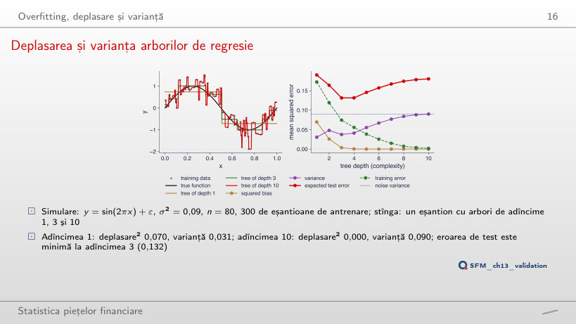
Răspuns
La adîncimea 4 (0,063), față de adîncimea 3 (0,132) cu σ² = 0,09. Cu mai puțin zgomot, varianța arborilor adînci costă mai puțin, deci optimul se mută spre un model mai flexibil; cu σ² = 0,25 minimul rămîne la adîncimea 3 (0,329).
Validarea pentru serii de timp
Trei scheme de validare
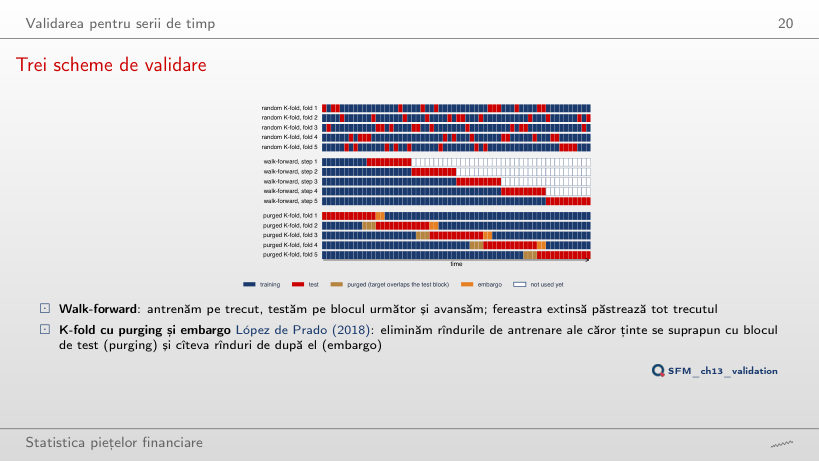
Răspuns
11 din 12. Partiția aleatoare împrăștie testul printre zilele de antrenare, iar cu ținte suprapuse vecina are aproape aceeași țintă: modelul a văzut practic răspunsul. Cu K = 8 situația este aceeași, 7 din 8.
Validarea walk-forward, pas cu pas
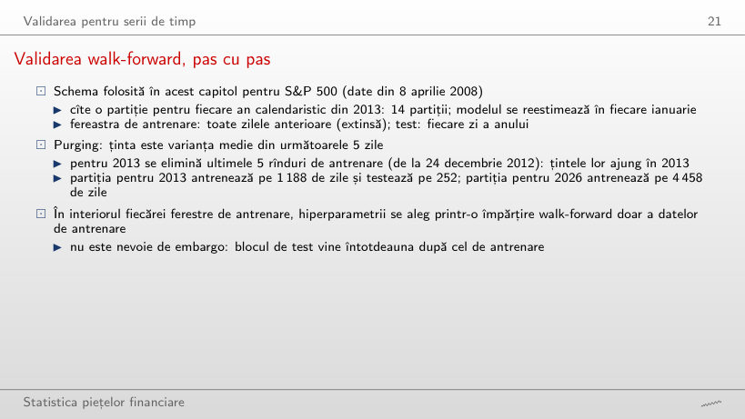
Cele 14 partiții walk-forward (S&P 500)
Exemplu lucrat: o partiție walk-forward cu purging
Răspuns
1171: purging-ul elimină 22 de rînduri în loc de 5, deci cu 17 mai puține decît cele 1188 de zile cu h = 5; ultima zi de antrenare devine 28 noiembrie 2012. Testul rămîne cele 252 de zile din 2013.
Leakage în practică: partiții aleatoare pe ținte suprapuse
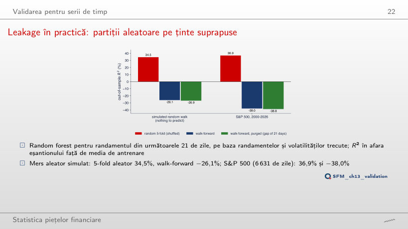
Răspuns
17,8%, față de 34,5% cu 21 de zile: țintele a două zile vecine au acum 4 din 5 randamente comune, nu 20 din 21, deci leakage-ul este mai mic, dar tot mare. Walk-forward rămîne negativ (−17,5%); cu 63 de zile, K-fold aleator urcă la 35,8%.
Regresia penalizată: ridge și lasso
Regresia ridge (2/2)
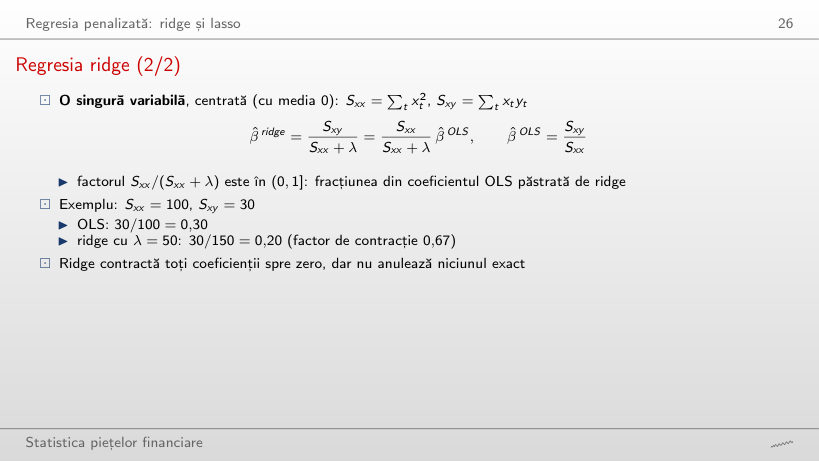
Exemplu lucrat: ridge cu o singură variabilă
Răspuns
0,10 = 30/(100 + 200); factorul de contracție scade de la 0,67 la 0,33. Coeficientul se apropie de zero, dar nu devine zero pentru niciun λ finit; lasso cu λ = 200 este deja 0.
Lasso
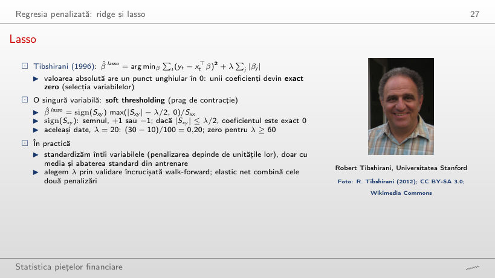
Exemplu lucrat: soft thresholding
Răspuns
Exact 0: λ/2 = 30 = |S_xy|, deci max(30 − 30, 0) = 0, și rămîne 0 pentru orice λ ≥ 60. Ridge cu același λ ar da 30/160 = 0,19.
Traiectoriile ridge și lasso pentru variabilele de volatilitate
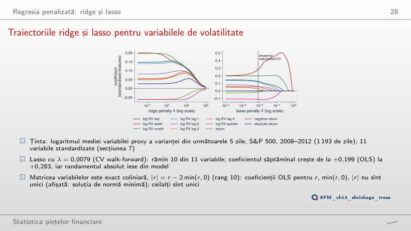
Răspuns
Log RV săptămînal: rămîne nenul pînă la λ = 0,86 pe grilă, după log RV lunar (0,46), log RV zilnic (0,21) și randamentul negativ (0,18). Luată singură, varianța săptămînală este cea mai informativă variabilă; ridge, în stînga, nu anulează niciun coeficient.
Arbori de decizie, random forest și gradient boosting
Exemplu rezolvat: o împărțire, pas cu pas
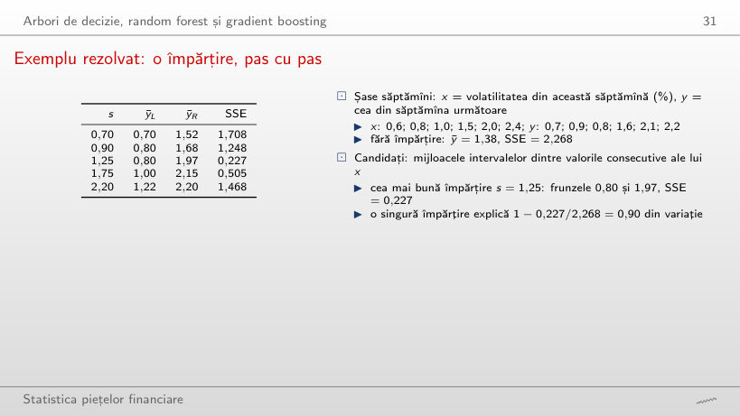
Împărțirile candidate (tabelul de pe slide)
Exemplu lucrat: alegerea pragului
Răspuns
0,78 = 1 − 0,505/2,268, față de 0,90 pentru s = 1,25. Pragul 1,75 trece săptămîna cu x = 1,5 (y = 1,6) în frunza din stînga, unde media urcă la 1,00 și abaterile cresc.
Un arbore de adîncime 2 pentru volatilitatea săptămînii viitoare
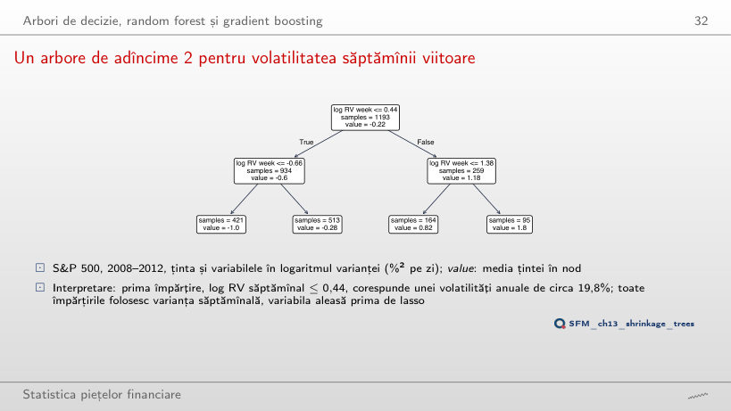
Răspuns
Nu: 5 din cele 6 împărțiri folosesc log RV săptămînal, una folosește log RV lunar (≤ 0,069), în ramura cu volatilitate săptămînală moderată. Prima împărțire rămîne log RV săptămînal ≤ 0,44, pentru că un arbore greedy nu își revizuiește alegerile de sus.
Random forest
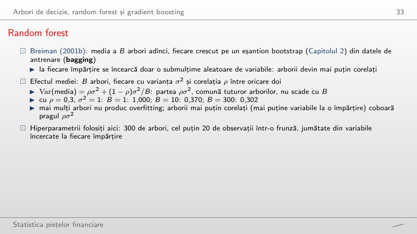
Exemplu lucrat: varianța unei medii de arbori
Răspuns
0,302 = 0,3 + 0,7/300, față de 0,370 la B = 10. Partea comună ρσ² = 0,3 nu dispare oricîți arbori am adăuga; pragul coboară doar dacă arborii devin mai puțin corelați.
Gradient boosting
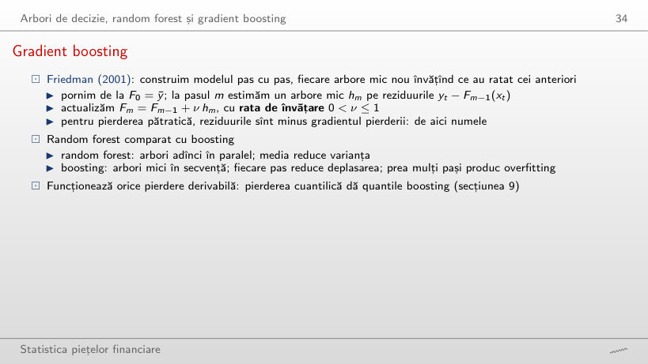
Exemplu lucrat: boosting cu arbori de adîncime 1 pe cele șase săptămîni (calcul suplimentar)
Răspuns
După 4 pași: SSE scade la 1,880, 1,566, 1,312 și 1,101. Fiecare pas aplică doar ν = 10% din ajustarea arborelui pe reziduurile curente, deci eroarea scade geometric, nu liniar. După 50 de pași SSE = 0,007: pe datele de antrenare boosting ajunge aproape la zero, de aceea numărul de pași se alege pe validare.
Un arbore, un random forest și boosting pe date de volatilitate
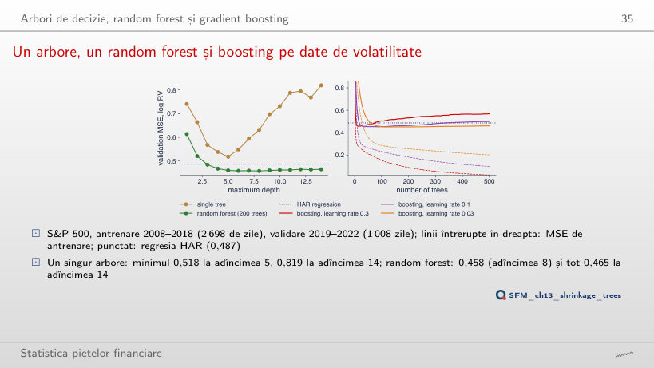
Răspuns
0,670, mai mult decît arborele simplu de aceeași adîncime (0,631) și mult peste 0,458 cu 200 de arbori. Fiecare arbore al pădurii vede un eșantion bootstrap și doar jumătate din variabile la o împărțire, deci singur este mai slab decît un arbore obișnuit; media îi elimină varianța, iar cu 10 arbori MSE este deja 0,478.
Rețele neuronale
Perceptronul și perceptronul multistrat (2/2)
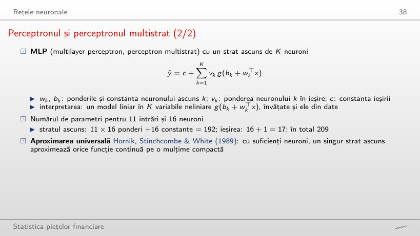
Exemplu lucrat: numărul de parametri
Răspuns
417 = 11 × 32 + 32 + 32 + 1. Nu se dublează față de 209: fiecare neuron în plus adaugă p + 2 = 13 parametri, iar constanta ieșirii nu depinde de K.
O rețea mică și funcțiile ei de activare
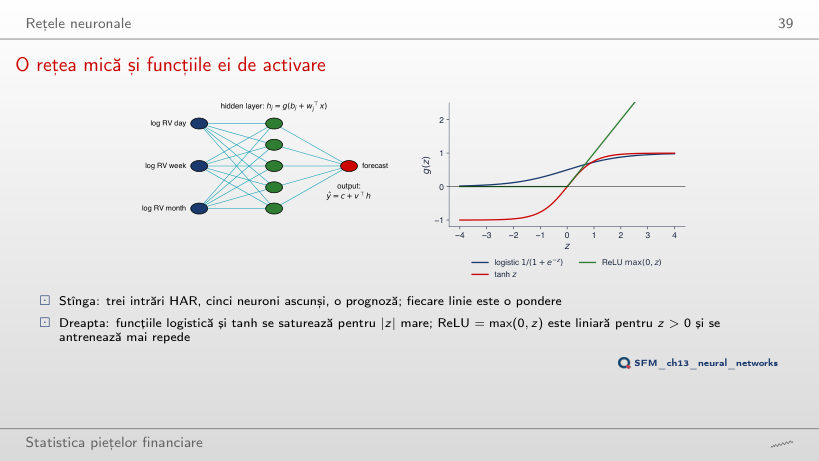
Răspuns
ReLU: g′(4) = 1. Logistica are g′(4) = 0,018, iar tanh 0,0013: ambele se saturează pentru |z| mare, deci gradientul care trece prin neuron aproape dispare. De aceea rețelele cu ReLU se antrenează mai repede.
ARCH cu rețea neuronală pentru GBP/USD
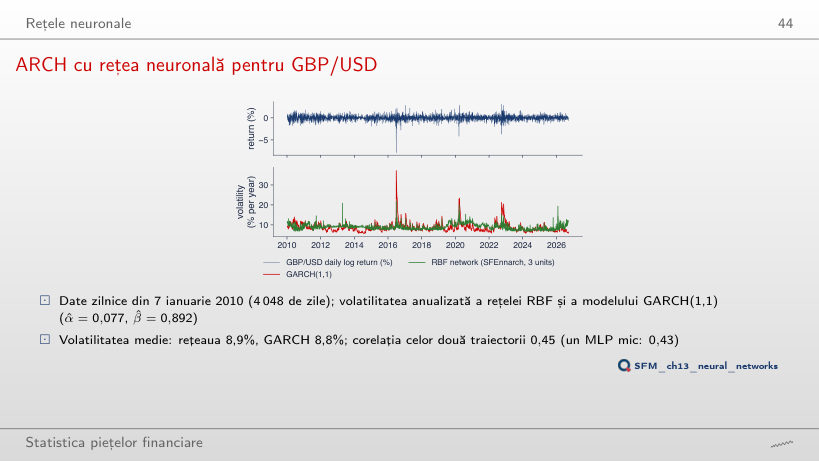
Răspuns
Crește la 0,61, iar maximul rețelei urcă de la 22,0% la 27,6%; cu 2 unități corelația scade la 0,26. Mai multe unități dau o formă mai flexibilă, dar rețeaua vede tot doar ultimele 3 randamente: maximul GARCH de după votul pentru Brexit, 37,3%, rămîne departe.
Rețeaua RBF comparată cu mersul aleator
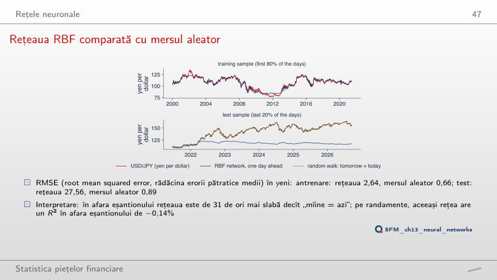
Răspuns
De 13 ori (12,12 față de 0,91 yeni), față de 31 de ori cu 80%. Maximul din antrenare urcă la 151,6, dar testul ajunge la 163,9: rețeaua tot nu poate extrapola dincolo de nivelurile văzute.
Aplicație: prognoza volatilității realizate
Reperul HAR (1/2)
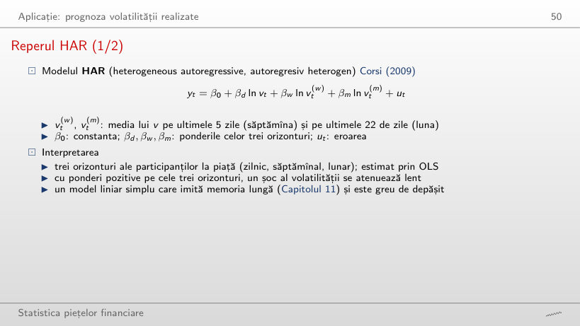
Exemplu lucrat: o prognoză HAR
Răspuns
Puțin peste: 69,3% față de 66,1% pe an. Maximul volatilității realizate în 2020, 102,4%, a venit însă înaintea vîrfului prognozei: HAR reacționează după șoc, nu îl anticipează.
Evaluarea (1/3): R² în afara eșantionului
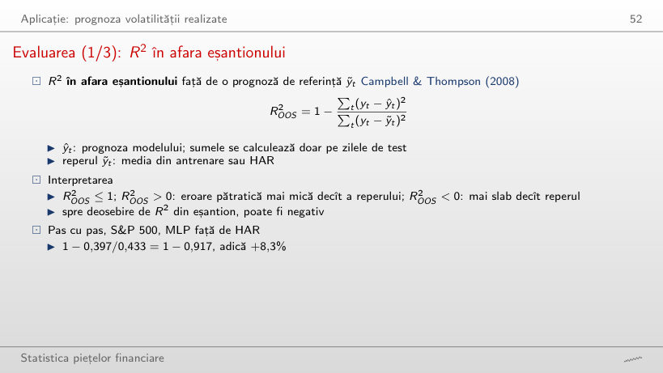
Exemplu lucrat: R² în afara eșantionului
Răspuns
+1,0%: MSE 0,429 față de 0,433. Față de media de antrenare, același model are 61,9%: R²_OOS depinde de reper, iar HAR este un reper mult mai exigent. Testul DM nu separă acest cîștig de zgomot (p = 0,747).
Evaluarea (2/3): QLIKE
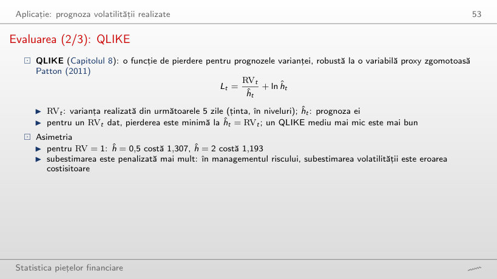
Exemplu lucrat: pierderea QLIKE
Răspuns
ĥ = 1/3: 3 + ln(1/3) = 1,901, față de 1/3 + ln 3 = 1,432. Subestimarea de trei ori costă mai mult decît supraestimarea de trei ori, deși eroarea pătratică ordonează invers: (1 − 1/3)² = 0,444 și (1 − 3)² = 4.
Evaluarea (3/3): testul Diebold–Mariano
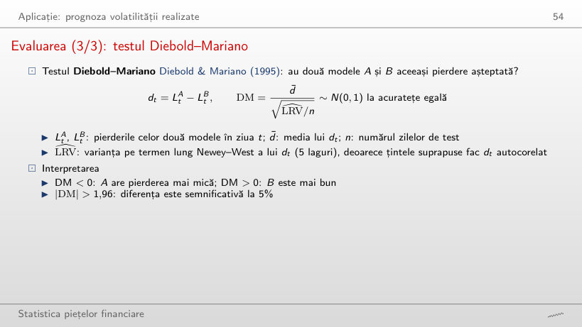
Exemplu lucrat: statistica Diebold–Mariano
Răspuns
Crește în valoare absolută, la −4,61: varianța pe termen lung cu 5 laguri este de 1,35 ori varianța simplă, pentru că țintele pe 5 zile se suprapun și fac d_t autocorelat. Fără corecție testul pare mai sigur decît este; aici concluzia (MLP mai bun) rămîne aceeași.
Rezultatele: S&P 500 și Bitcoin
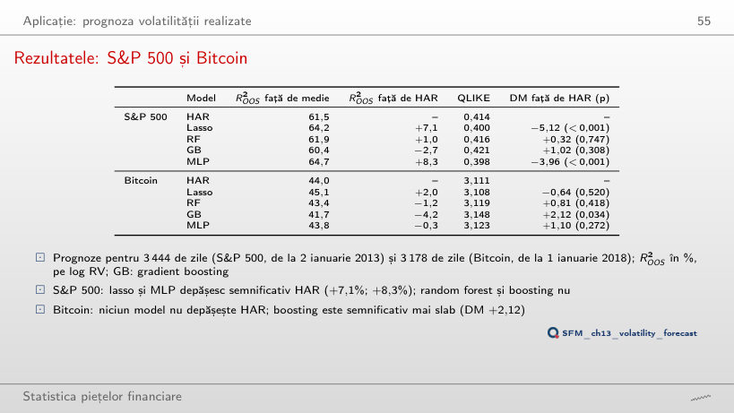
Rezultatele în afara eșantionului: R²_OOS pe log RV (%), QLIKE, statistica DM față de HAR (p-value)
Răspuns
Da: R²_OOS +7,9%, DM −2,28 (p = 0,023); lasso +7,4%, DM −3,42. Random forest și boosting nu sînt semnificativ mai bune decît HAR în nicio subperioadă: pînă în 2019 au −1,5% și −11,0%, din 2020 +3,5% și +5,8%, cu p peste 0,6.
Prognozele în perioadele turbulente din 2020 și 2025
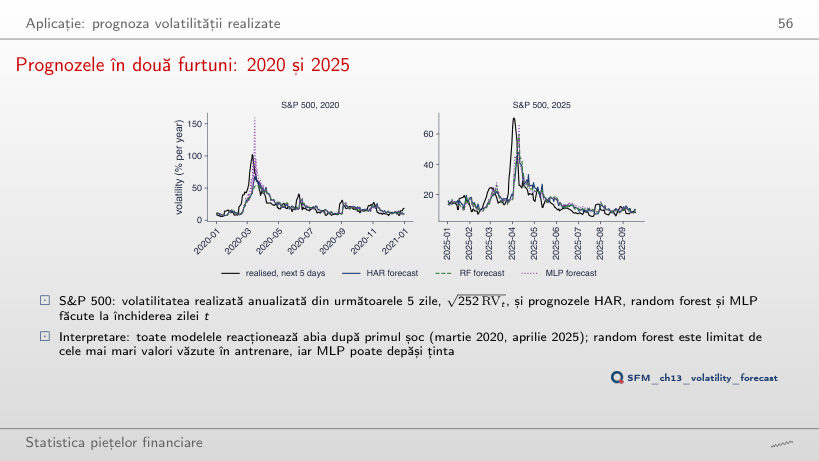
Răspuns
Mult sub: 53%, față de 69% pentru HAR și 159% pentru MLP. Un random forest prezice medii ale frunzelor din antrenare, deci rămîne sub valorile extreme; MLP și lasso (172%) extrapolează și pot depăși ținta.
Variabilele folosite de random forest
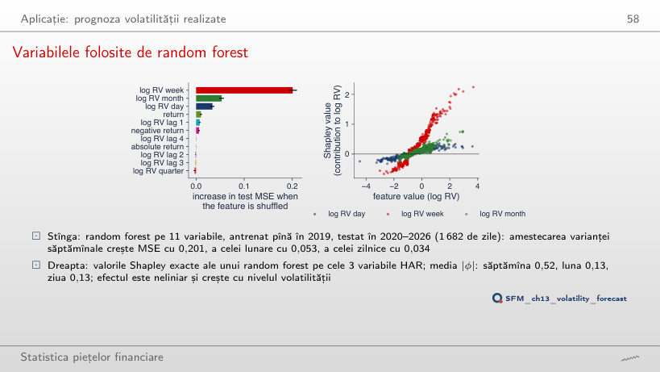
Importanța prin permutare (10 amestecări) și media |φ| (random forest pe cele 3 variabile HAR)
Răspuns
Mai îngust: φ zilnic între −0,32 și 0,35, față de −0,66 și 2,25 pentru săptămînă; media |φ| este 0,13, față de 0,52. Pădurea se bazează pe varianța săptămînală, care conține deja o parte din informația zilei.
Aplicație: semnul randamentului de mîine
Reperul clasei majoritare
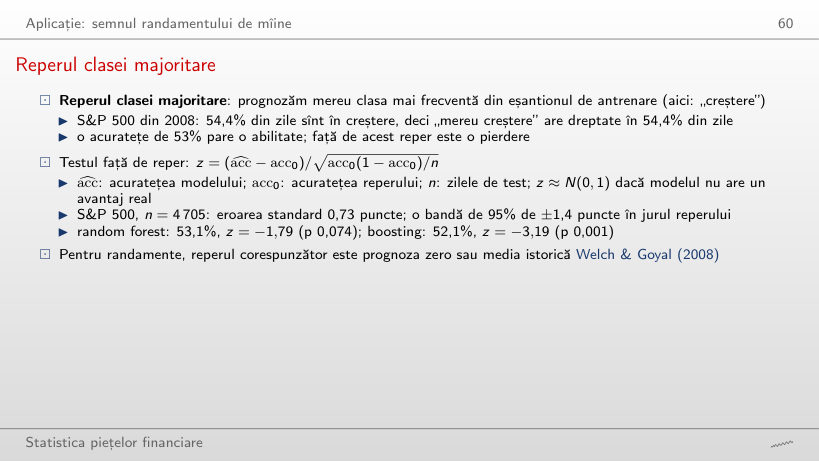
Exemplu lucrat: testul față de reper
Răspuns
−0,21 (53,6% față de 53,8%, p = 0,84). Pe S&P 500 random forest are z = −1,79, pe Bitcoin −0,99: pe nicio piață un model nu este semnificativ mai bun decît „mereu creștere”.
Acuratețea față de reper
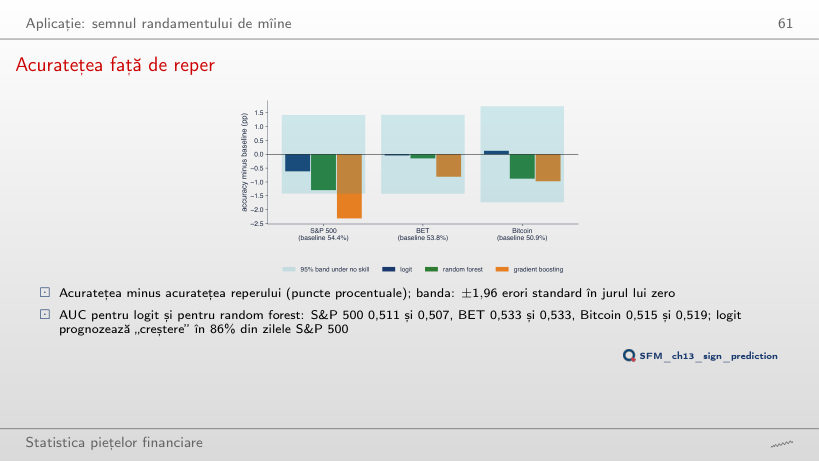
Răspuns
Da: gradient boosting, −3,9 puncte, z = −2,77; logit și random forest au z = −1,36 și −1,30. Banda de 95% este mai largă cu mai puține zile, totuși boosting rămîne în afara ei: modelul învață tipare din zgomotul anilor de antrenare.
Aplicație: VaR 1% prin metode cuantilice
Regresia cuantilică (1/2)
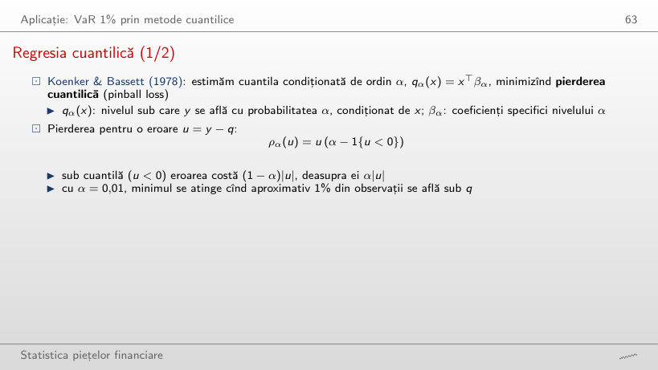
Exemplu lucrat: pierderea cuantilică pe randamentele S&P 500
Răspuns
q = −1,59%, cuantila empirică de 5%: 4,99% din zile se află sub ea. Pentru α = 0,01 minimul este la −3,07% (0,99% din zile sub el). Media randamentelor, 0,05%, minimizează eroarea pătratică, nu pierderea cuantilică.
Backtesting pentru VaR 1%: metode cuantilice, HS și GARCH-t (1/2)
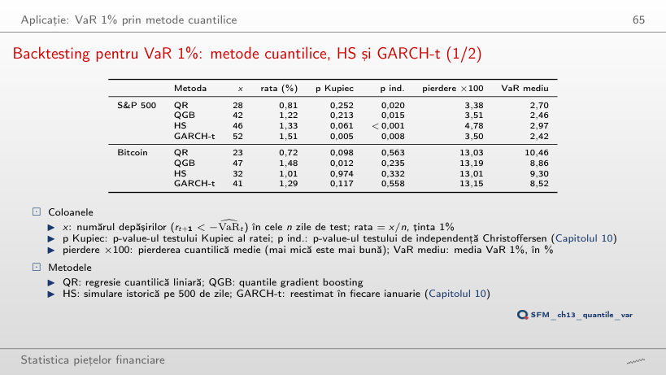
Backtesting pentru VaR 1% (tabelul de pe slide)
Răspuns
Da: 1,60% (27 din 1686 de zile), p = 0,022. QR are 0,71% (p = 0,21), iar depășirile HS apar grupat (p ind. 0,005). Pentru Bitcoin din 2020, QR este depășit prea rar: 0,45%, p Kupiec 0,002.
Prognozele VaR 1% în 2020 și 2025
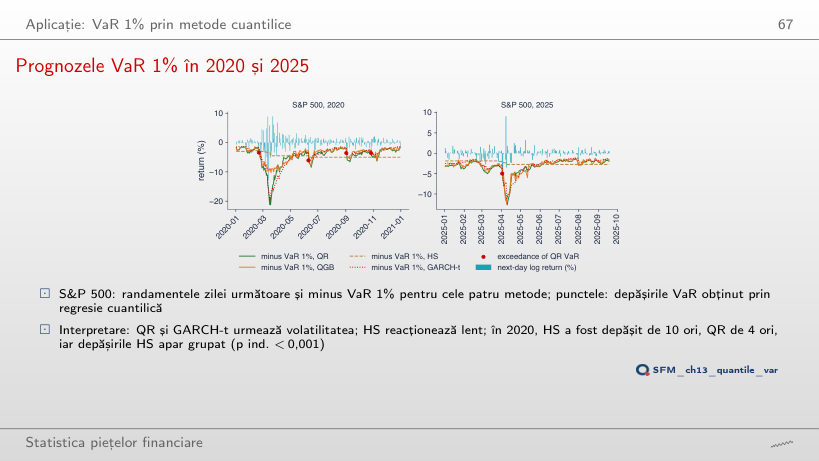
Răspuns
HS: 5 depășiri, față de 4 pentru GARCH-t și cîte 1 pentru QR și QGB. După 500 de zile liniștite, simularea istorică intră în aprilie 2025 cu un VaR prea mic și reacționează lent.
Data snooping și raportul Sharpe deflatat
Cea mai bună dintre N strategii (2/2)
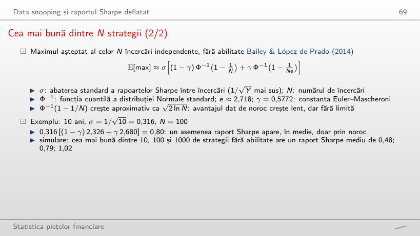
Exemplu lucrat: maximul așteptat al celor N rapoarte Sharpe
Răspuns
0,566 = 0,800/√2, pentru că σ = 1/√20 = 0,224; simularea dă 0,559. Mai mulți ani reduc distorsiunea de selecție doar cu √Y: cu N = 1000 maximul este tot 0,728.
Distorsiunea de selecție în practică
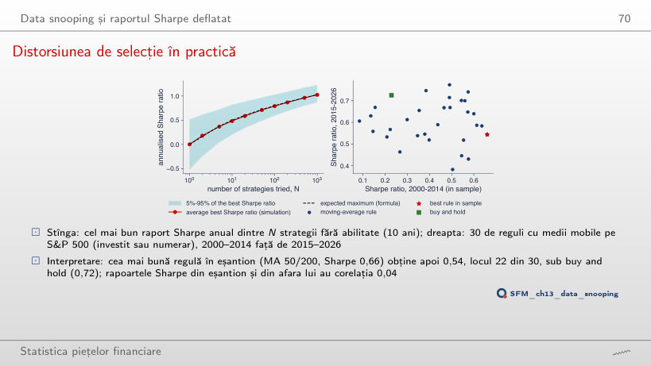
Răspuns
MA 5/200 (Sharpe 0,57 în eșantion), cu 0,74 după 2014, locul 3 din 30. Cu toate cele 30 de reguli, cîștigătoarea, MA 50/200 (0,66), ajunge pe locul 22: alegerea dintre mai multe reguli ridică raportul Sharpe din eșantion, nu pe cel viitor.
Raportul Sharpe deflatat (2/2)
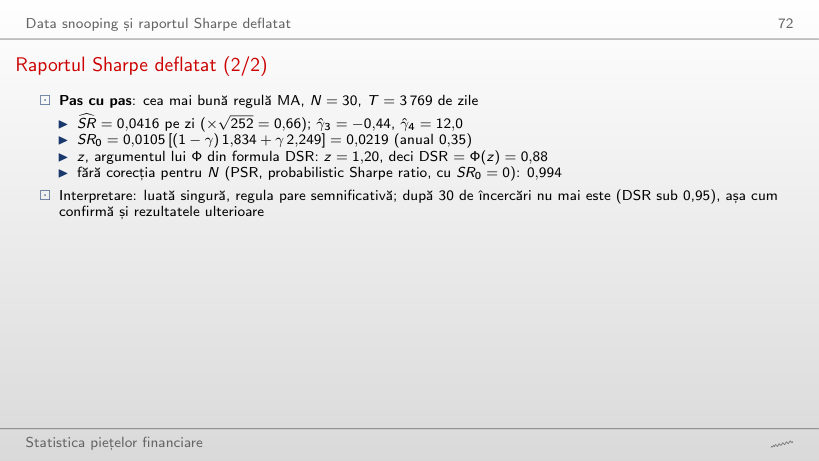
Exemplu lucrat: raportul Sharpe deflatat al celei mai bune reguli MA
Răspuns
Pînă la N = 6: DSR = 0,961 la N = 5, 0,955 la N = 6 și 0,949 la N = 7; la N = 30, 0,884. Fără corecție (PSR) regula ar părea semnificativă, cu 0,994: SR₀ crește lent cu N, dar SR̂ = 0,0416 pe zi are o margine mică.
Studiu de caz: Gu, Kelly și Xiu (2020)
Rezultatele: R² predictiv și valoarea economică
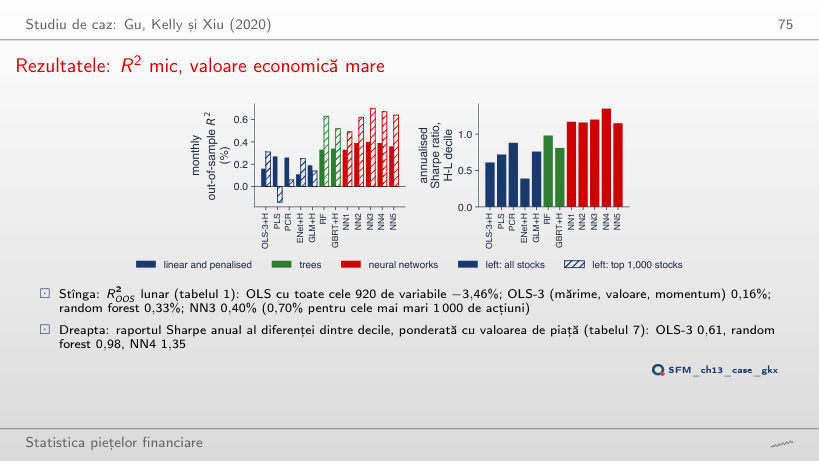
Răspuns
Nu: NN3 are cel mai mare R² (0,40%), NN4 cel mai mare raport Sharpe (1,35, față de 1,20 pentru NN3). Diferențele de R² dintre rețele sînt de cîteva sutimi de punct procentual, iar clasamentul după valoarea economică poate diferi.
Datele cursului din data/market (pînă la 18 septembrie 2026): S&P 500 și Bitcoin (prețuri de deschidere, maxim, minim și închidere), BET, GBP/USD, randamentul obligațiunilor germane pe 10 ani, aurul, USD/JPY. Simularea deplasare–varianță, schema de validare, traiectoriile ridge și lasso, arborii, curbele random forest și boosting, rețelele RBF și MLP, prognozele walk-forward ale celor șase modele de volatilitate, ale clasificatorilor de semn și ale celor patru metode VaR vin din codul din curs (Quantlets/Ch_13, semințele 2026 și 3); modelele grele nu sînt reestimate în browser. Browserul recalculează din aceste prognoze HAR, R² în afara eșantionului, QLIKE, testul Diebold–Mariano, acuratețea, testul z, AUC, testele Kupiec și Christoffersen, pierderea cuantilică, maximul așteptat al raportului Sharpe și DSR. Gu, Kelly și Xiu (2020): valorile publicate în tabelele 1 și 7 ale lucrării. Alte niveluri de zgomot, orizonturi, adîncimi, numere de arbori și de unități, ponderi de antrenare, perioade și ani de separare sînt rulări suplimentare ale aceluiași cod; exemplul de boosting pe cele șase săptămîni este un calcul suplimentar.